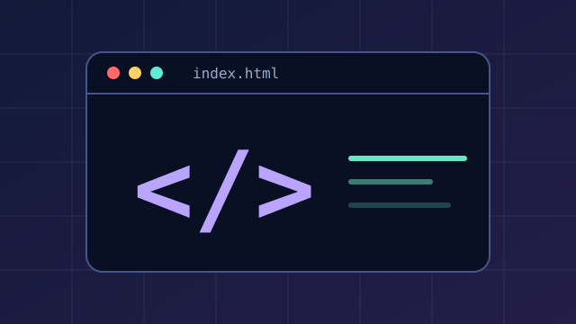
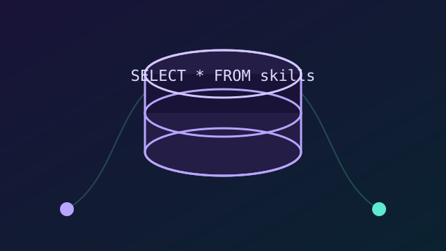

01 / WEB
HTML, CSS a JavaScript
Sémantické rozvržení, responzivní styl a interaktivita, která dává stránce život.
- HTML
- CSS
- JS
01 // O MNĚ
Jsem Kryštof Dopita a jsem student, který se v IT orientuje v šířku. Láká mě web, backend i práce s daty — jednoduše vše, co se dá z nápadu postavit na funkční řešení.
Každý projekt pro mě znamená novou věc, kterou si odnesu. Teď buduji základy, zkouším školní projekty a hledám příležitost, kde se můžu dál učit od zkušenějších.
02 // DOVEDNOSTI
Základy, na kterých stavím — od rozvržení stránky přes programovací jazyky až po práci s daty.

Sémantické rozvržení, responzivní styl a interaktivita, která dává stránce život.

Logika, funkce a objektové myšlení. Od rychlých skriptů po přehledné třídy a rozhraní.

Návrh tabulek, vztahy mezi nimi a dotazy, které z dat vytěží přesně to, co potřebuju.
03 // PROJEKTY
Ukázky úloh, na kterých jsem se učil propojovat teorii s kódem.
| Projekt | Technologie | Co jsem se naučil |
|---|---|---|
| Osobní stránka | HTML, CSS, JavaScript | Responzivní layout, scroll efekty a přístupnost |
| Databáze knihovny | SQL | Návrh tabulek, vztahy a dotazy |
| Python nástroj | Python | Práce se soubory a jednoduchá automatizace |
| Objektový model | Java / C# | Třídy, dědičnost a rozhraní |
04 // KONTAKT
Jsem student začátečník a rád se potkám nad kódem. Napiš mi, máš-li nápad, zpětnou vazbu nebo jen chceš říct ahoj.
krystofkolumbus99@gmail.com github.com/krystofdopita